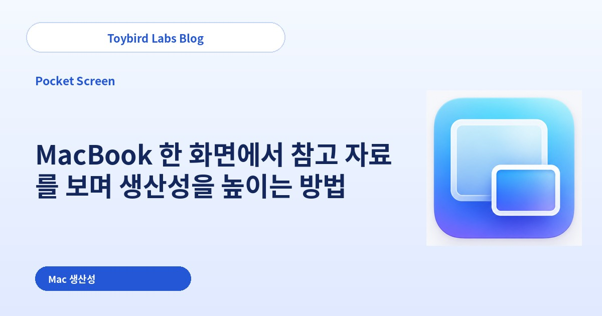
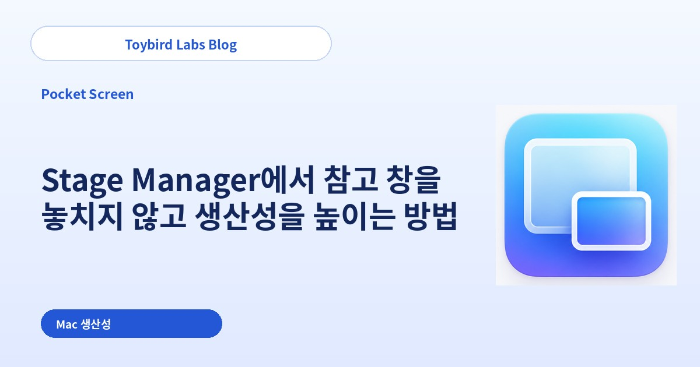
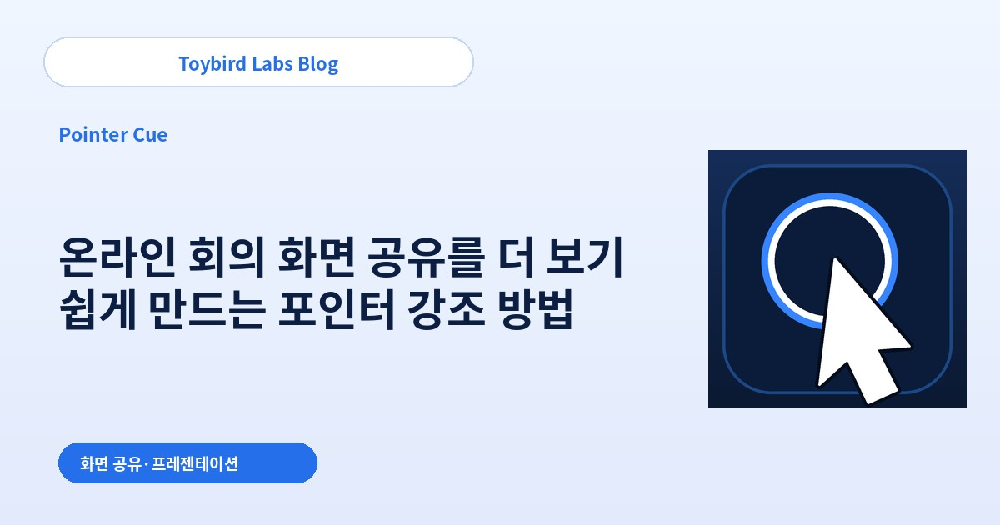
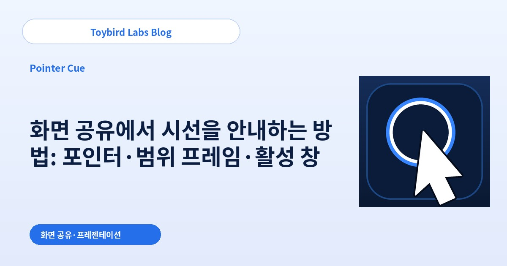

Toybird Labs Blog
업무와 학습을 더 편리하게 만드는 실용적인 방법
업무에서 생성형 AI를 활용하는 단계별 가이드와 Mac·Windows 앱, 학습 도구에 관한 실용적인 정보를 제공합니다.
전체 글
먼저 읽어보세요

업무에서 ChatGPT를 활용하는 방법: 프롬프트 5가지 원칙과 실전 예시 10개
업무에서 ChatGPT를 활용할 때 필요한 프롬프트 작성 원칙 5가지와 고객 답변, 회의 정리 등 바로 써볼 수 있는 사례 10개를 소개합니다.
업무별 실전 가이드

ChatGPT로 거래처 요청을 정중하게 거절하는 이메일 작성 방법
거절해야 하는 요청, 실제 제약, 가능한 대안, 다음 행동을 정리해 ChatGPT로 명확하고 정중한 비즈니스 이메일을 만드는 방법을 소개합니다.

ChatGPT로 회의 메모에서 할 일·담당자·기한 정리하기
정리되지 않은 회의 메모에서 결정 사항, 할 일, 담당자, 기한, 미결 사항을 ChatGPT로 구분하는 방법을 소개합니다.

ChatGPT 답변이 의도와 다를 때: 원인 6가지와 수정 프롬프트
ChatGPT 답변이 너무 길거나 말투가 다르고 근거 없는 사실이 섞일 때, 문제를 구분해 짧은 추가 지시로 수정하는 방법을 설명합니다.

ChatGPT로 고객 문의 답변 이메일 작성하기
고객의 원문, 확인된 사실, 아직 모르는 내용, 다음 대응을 구분해 ChatGPT로 정확한 고객 지원 이메일을 만드는 방법을 소개합니다.

ChatGPT가 답변 전에 부족한 정보를 질문하게 하는 방법
ChatGPT가 부족한 정보를 한 번에 하나씩, 최대 몇 개, 또는 선택지와 함께 질문하도록 만드는 프롬프트를 소개합니다.

ChatGPT로 긴 문서를 업무 목적에 맞게 요약하는 방법
독자, 판단 목적, 길이, 반드시 남길 근거, 정보 부족 처리 방법을 지정해 ChatGPT로 긴 문서를 요약하는 방법을 소개합니다.

ChatGPT로 같은 문장을 고객·경영진·사내용으로 바꾸는 방법
같은 사실을 유지하면서 고객, 경영진, 사내 팀, 초보자에게 맞는 표현으로 ChatGPT가 문장을 다시 쓰게 하는 방법을 소개합니다.

ChatGPT로 여러 선택지를 비교하고 의사결정표 만드는 방법
비교 기준, 우선순위, 누락 정보 처리, 추천 조건을 지정해 ChatGPT로 제품이나 서비스를 비교하는 방법을 소개합니다.

ChatGPT 고객 역할로 영업 미팅 롤플레이 연습하기
고객 프로필, 한 번에 한 질문, 예상 반론, 종료 후 평가 기준을 지정해 실제와 가까운 영업 미팅 연습을 만드는 방법입니다.
MacBook 한 화면의 생산성 높이기

MacBook 한 화면에서 참고 자료를 보며 생산성을 높이는 방법
MacBook 한 화면에서 PDF, 웹페이지, 채팅을 보면서 생산성을 높이는 방법을 설명합니다. 타일 배치, Split View, Stage Manager, 작은 참조 창을 비교합니다.

Mac에서 창 전환을 줄이고 참고 화면을 계속 표시하는 방법
Mac에서 PDF, 웹, 채팅, 대시보드를 확인할 때마다 창을 전환하는 부담을 줄이는 방법을 설명합니다. 기본 배치와 상시 참조 화면을 비교합니다.

Stage Manager에서 참고 창을 놓치지 않고 생산성을 높이는 방법
Mac Stage Manager에서 PDF·웹·채팅 참고 화면을 반복해서 놓치지 않는 방법을 설명합니다. 같은 그룹 배치와 작업 세트 사이에 남는 작은 참조 창을 비교합니다.
원격 회의와 제품 데모를 더 이해하기 쉽게 만들기

온라인 회의 화면 공유를 더 보기 쉽게 만드는 포인터 강조 방법
Zoom·Teams·Google Meet 화면 공유에서 참가자가 마우스 포인터를 놓치지 않도록 하는 방법을 설명합니다. OS 설정, 설명 속도, 필요할 때의 강조 링을 비교합니다.

Mac 프레젠테이션과 제품 데모에서 현재 창을 더 분명하게 보여 주는 방법
Mac 프레젠테이션·제품 데모에서 지금 봐야 할 창을 명확히 하는 방법을 설명합니다. 화면 정리, 단일 창 공유, 활성 창 강조를 비교합니다.

화면 공유에서 시선을 안내하는 방법: 포인터·범위 프레임·활성 창
화면 공유에서 점은 포인터, 범위는 프레임, 현재 앱은 창 강조로 구분해 어디를 봐야 하는지 더 명확하게 전달합니다.